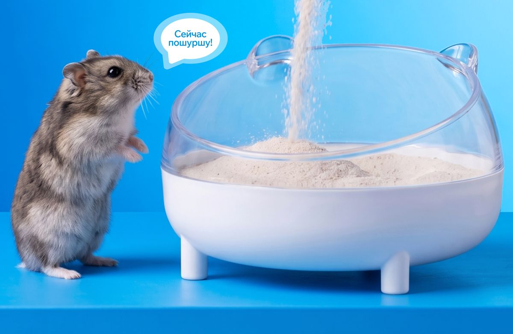
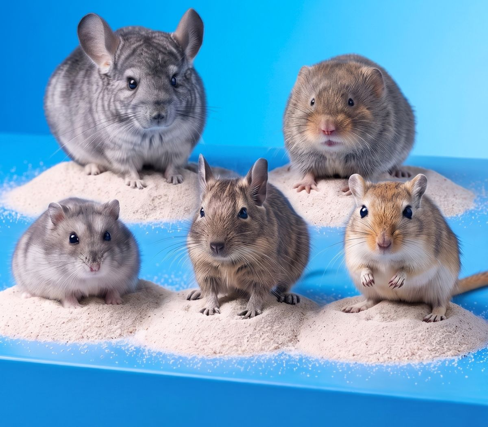
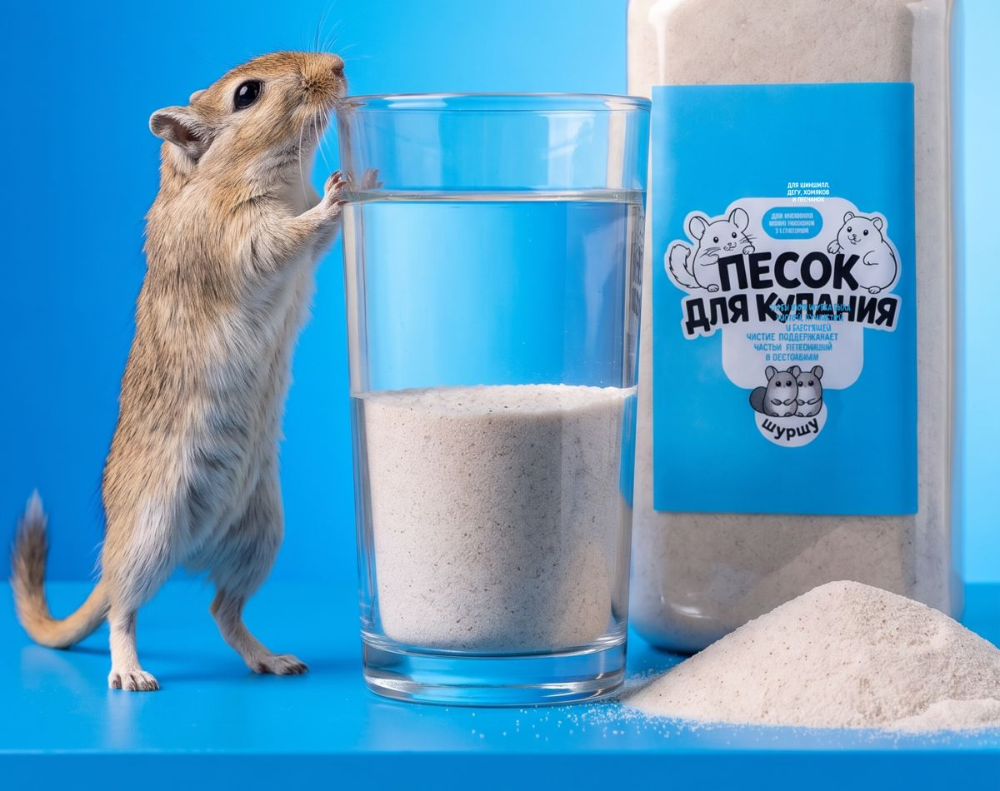
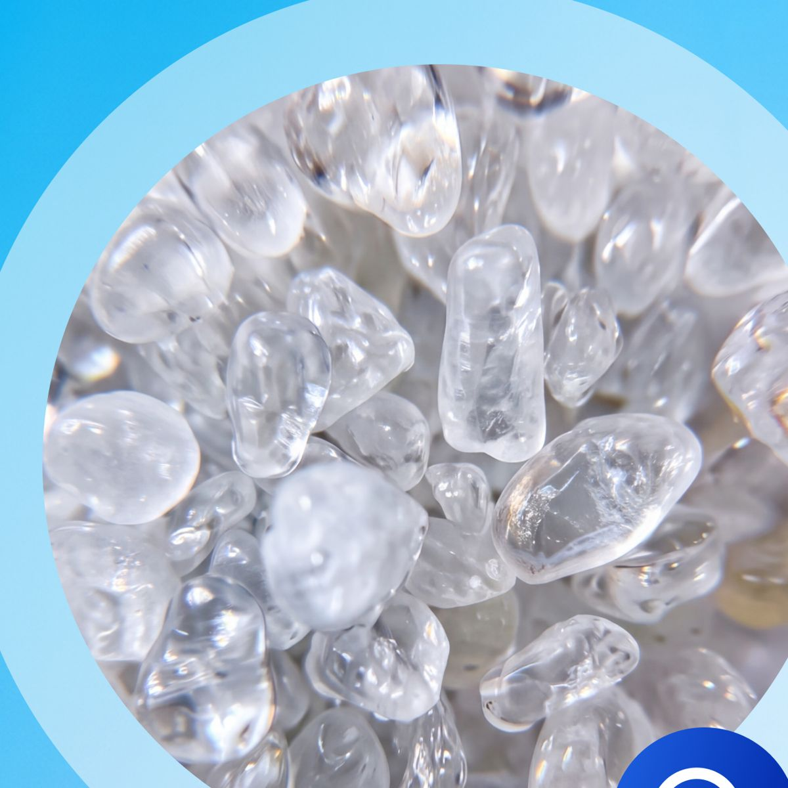
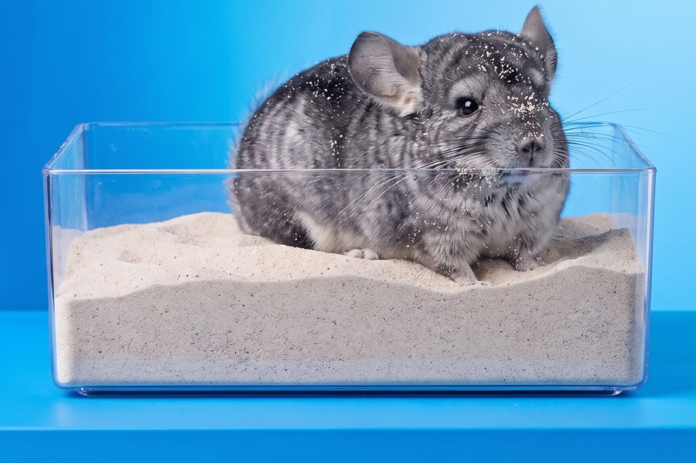
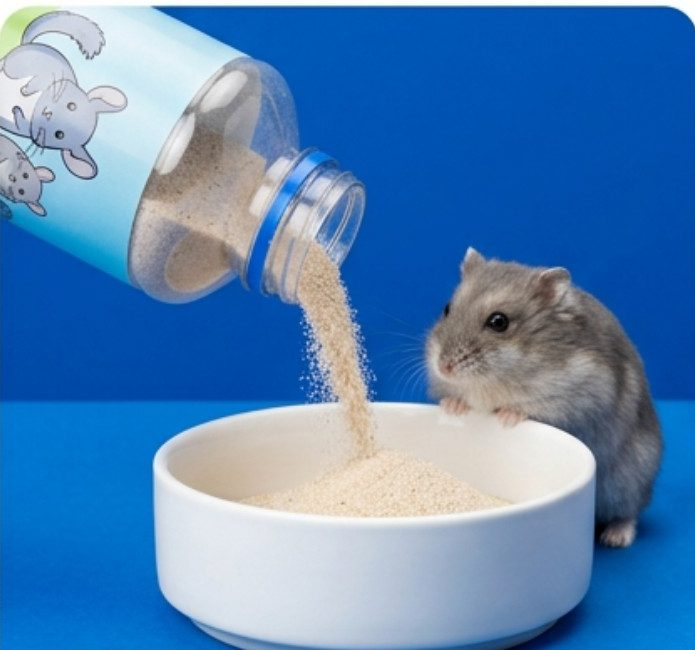
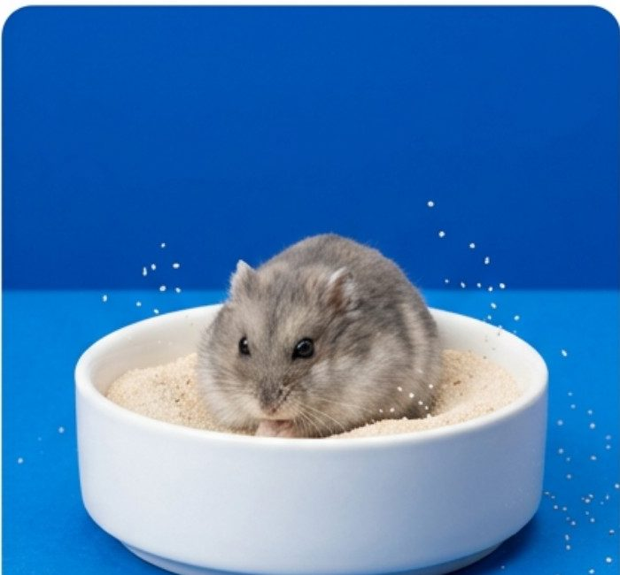
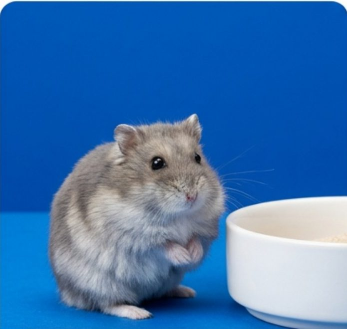
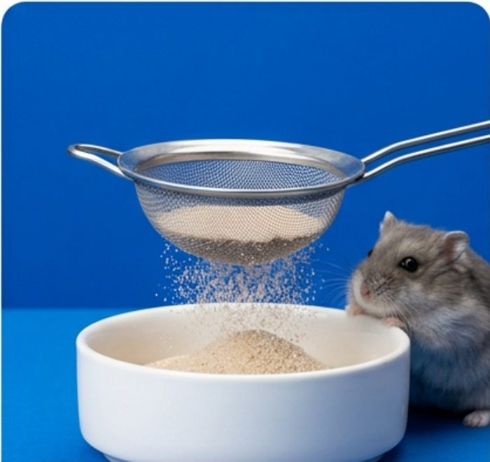
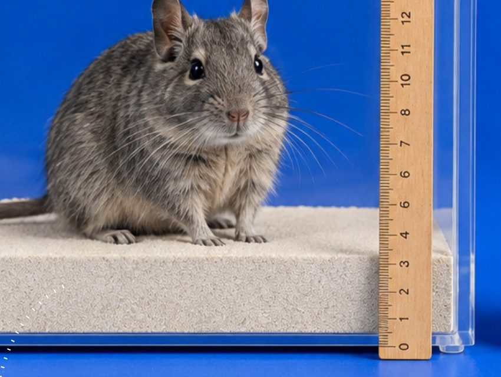

Без пыли
Чисто даже при
активном купании
активном купании
гипоаллергенный✿
без запаха✕

Кварцевый песок SHURSHU: мелкий, мягкий и без пыли. Промыт и термически обработан, чтобы зверёк купался с удовольствием, а дома было чисто.

Шиншиллы, дегу и песчанки не моются водой. Шёрстку им чистит песок: он забирает лишний жир и грязь. Поэтому песок должен быть чистым, мягким и без пыли.




Всё, что важно знать хозяину, в восьми коротких пунктах.
Четыре простых шага. Шиншиллам и дегу купание нужно 2–3 раза в неделю.

Насыпьте слой 2 см

Поставьте в клетку на 15–20 минут

Уберите купалку после купания

Просейте и используйте снова

SHURSHU продаётся на Ozon. Нажмите кнопку, и откроется карточка товара.
Для шиншиллы или дегу надолго. Из бутылки удобно насыпать без пыли.
Купить на OzonПесок не портится. Главное, чтобы он оставался сухим и чистым.
Это кварц. Зёрна у него светлые и полупрозрачные, поэтому на свету слегка блестят. Так и должно быть.
Это тальк, наш подарок к песку.
Шиншиллу и дегу нельзя. Шерсть у них густая и долго сохнет, зверёк может простыть. Им нужен только сухой песок.
Зверёк начнёт использовать её как туалет, а слишком частое купание сушит кожу. 15–20 минут достаточно.
После каждого купания просейте песок через ситечко. Когда он потемнел или стал пахнуть, насыпьте новый.